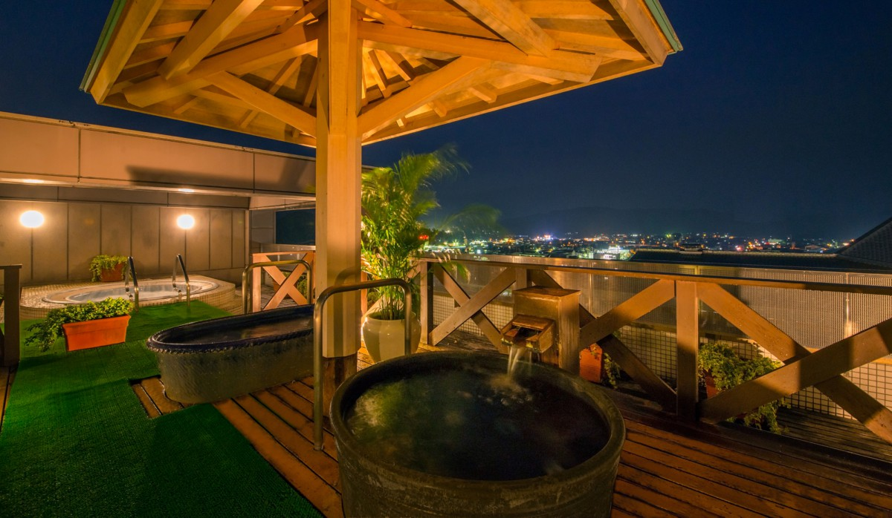
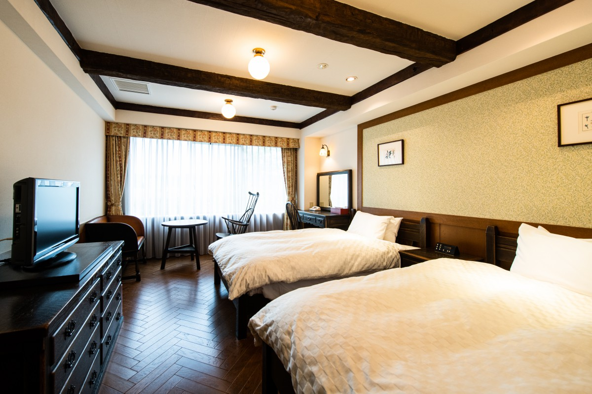
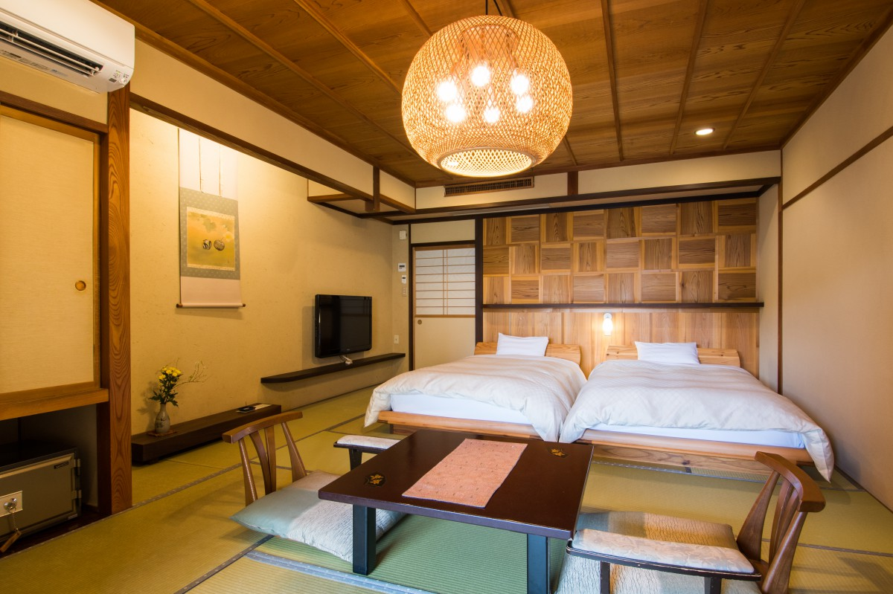
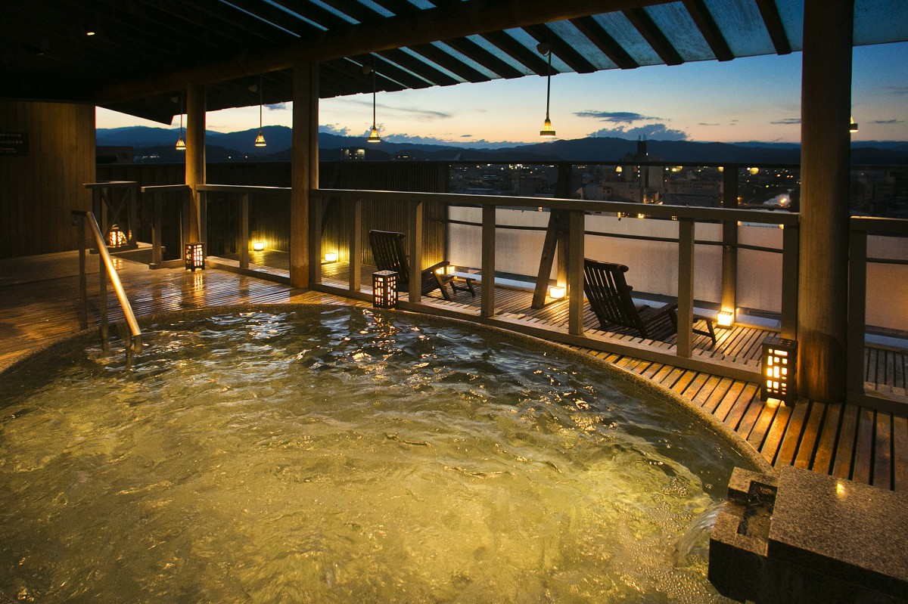
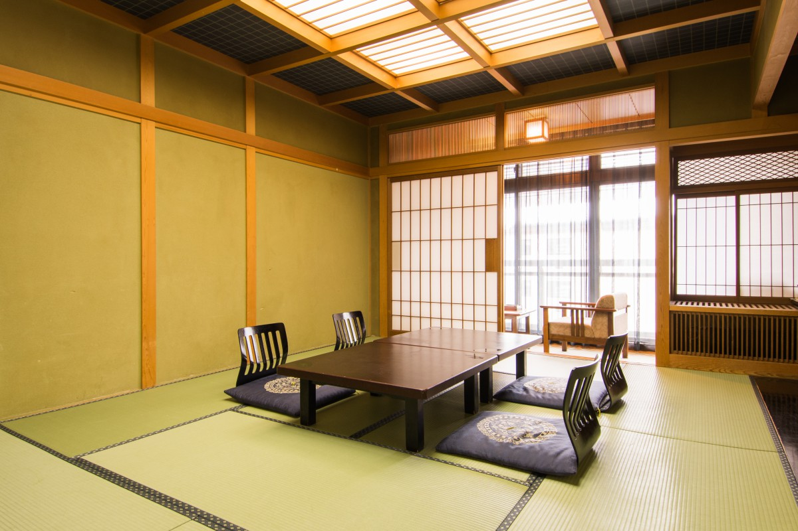
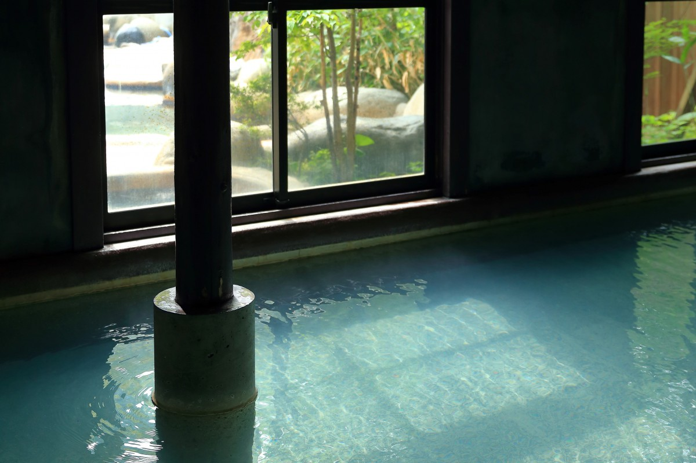

Префектура Гифу · Такаяма и Окухида · онсэны
Онсэны Хида-Такаямы: четыре гостиницы с горячими источниками и купальни Хираю

Хида-Такаяма окружена горами, и даже летом здесь прохладно. Чтобы почувствовать этот город, лучше задержаться на несколько дней, а осенью вечера удобнее всего заканчивать в горячем источнике. Мы выбрали четыре гостиницы с онсэнами и купальни, куда стоит заглянуть в Окухиде.
Отель
Hida Hotel Plaza: вся Такаяма под одной крышей
Hida Hotel Plaza открылся в 1972 году в центре Такаямы и стал одним из первых курортных отелей города. За полвека он разросся до трёх корпусов и 225 номеров.
Номера здесь очень разные, но интереснее всего концептуальные номера в одном из корпусов. Их обставила Hida Sangyo, одна из самых известных в Японии мебельных фабрик региона Хида, и каждый номер в своём роде единственный.
Номера названы по сериям мебели: «Мори-но котоба» («Язык леса»), «Энку», «Провиншиал». Серия «Энку» носит имя монаха Энку (1632–1695), странствующего резчика деревянных статуй Будды, о котором мы рассказываем в отдельной статье. В каждом номере изголовье кровати, стол, стулья и комод из одной серии, поэтому настроение у комнат совсем разное.

В 2019 году этим номерам было около 14 лет. Дерево за это время потемнело и стало только благороднее, мебель смотрится почти антикварной. Неудивительно, что такие комнаты любят гости из Европы и Америки, которые едут сюда за неспешным отдыхом.
Ещё одна особенность отеля: собственный горячий источник, который даёт 406 литров воды в минуту. Вода прозрачная, слегка солёная, хорошо прогревает и, как считается, полезна для кожи и снимает усталость. Купаться можно в открытой купальне на крыше или в большой японской бане в подвале восточного корпуса.
Кухню выбирают сами: японскую, европейскую или китайскую, и в каждом ресторане ужинают без спешки. В меню говядина Хида и другие продукты, выращенные в этих горах.
От станции Такаяма (JR) до отеля около 5 минут пешком. Старый квартал Такаямы тоже рядом, а до утреннего рынка Миягава, где торгуют местные фермеры, около 7 минут. Перед выездом стоит прогуляться туда за покупками: такое утро бывает только у тех, кто остался в городе на ночь.
Hida Hotel Plaza
- Адрес
- префектура Гифу, Такаяма, Ханаока-мати, 2-60
- Телефон
- +81 577-33-4600
- Номера
- 225
- Цены / Вход
- западный номер от 14 000 иен, японский номер на двоих от 18 000 иен (без налога)
- Заезд / выезд
- 15:00 (последний заезд 24:00) / 11:00
- Как добраться
- около 5 минут пешком от станции Такаяма (JR)
Рёкан
«Хидатэй Ханаоги»: свой источник и древнее дерево
Этот японский рёкан стоит в 10 минутах езды от центра Такаямы, вдали от городской суеты. Холл отделан дзиндай-кэяки, редкой древесиной дзельквы, тысячелетиями пролежавшей в земле. В номерах использованы дзиндай-суги, такая же древняя криптомерия из земли, и криптомерия из Ёсино, и всё пространство дышит теплом дерева.

Но главное здесь это собственный горячий источник, каких в Такаяме немного. Вода мягкая и гладкая, словно косметическая сыворотка, и многие гости возвращаются сюда снова.
«Хидатэй Ханаоги»
- Адрес
- префектура Гифу, Такаяма, Хомбо-мати, 411-1
- Телефон
- +81 577-36-2000
- Номера
- 48
- Цены / Вход
- ночь с ужином и завтраком от 21 000 иен (без налога, при двух гостях в номере)
- Заезд / выезд
- 14:00 / 11:00
- Как добраться
- около 10 минут на машине от центра Такаямы
- Сайт
- hanaougi.co.jp
Рёкан
Honjin Hiranoya Kachoan: онсэн рядом со старым кварталом
Рёкан стоит рядом со старым кварталом Такаямы, главной достопримечательностью города, и отсюда удобно гулять пешком. У него два здания, главное и отдельный корпус, и номера в них очень разные.
Самый необычный из них это младший люкс на третьем этаже главного здания, в дальнем конце коридора, обновлённый в 2018 году. Это номер в японско-европейском стиле: стены украшены решётками кумико с узором конопляного листа, а в джакузи выложена мозаичная плитка, которой славится префектура Гифу.

Honjin Hiranoya Kachoan
- Адрес
- префектура Гифу, Такаяма, Хоммати, 1-34
- Телефон
- +81 577-34-1234
- Номера
- 26
- Цены / Вход
- ночь с ужином и завтраком от 24 000 иен (без налога)
- Заезд / выезд
- 14:00 / 10:00
Окухида
Okada Ryokan и Warakutei: проточная вода Хираю
Okada Ryokan работает больше 100 лет и стоит у онсэна Хираю, одного из самых известных в Окухиде, горной части Такаямы. Здесь стоит посмотреть на крытую купальню с потолком высотой в два этажа, отделанную красным гранитом.

Отдельный корпус Warakutei это крестьянский дом, которому около 150 лет: его перенесли сюда и собрали заново. В нём 10 номеров, и у каждого своя купальня под открытым небом и своя крытая ванна. Посреди природы Окухиды здесь можно долго и неспешно лежать в горячей воде.
Okada Ryokan и Warakutei
- Адрес
- префектура Гифу, Такаяма, Окухида-онсэнго, Хираю-онсэн, 505
- Телефон
- +81 578-89-2336
- Номера
- 70 (60 в главном здании, 10 в Warakutei)
- Заезд / выезд
- 15:00 / 10:00
- Сайт
- okadaryokan.com
Купальни
Hirayu no Mori: 16 открытых купален и более 30 источников
Если вы в Окухиде, загляните в Hirayu no Mori. Сюда приезжают и на день, и с ночёвкой, чтобы искупаться в проточной воде Хираю под открытым небом, среди леса. На участке около 5 гектаров разбросаны 16 открытых купален, мужских и женских. Вода поступает из более чем 30 источников.

После бани можно отдохнуть в зале для отдыха или пообедать местными блюдами Окухиды. Входной билет в 2019 году стоил 500 иен для взрослых.
Hirayu no Mori
- Адрес
- префектура Гифу, Такаяма, Окухида-онсэнго, Хираю-онсэн, 763-1
- Телефон
- +81 578-89-3338
- Часы работы
- 10:00–21:00 (вход до 20:30)
- Выходные
- без выходных
- Цены / Вход
- взрослые 500 иен, дети от 3 лет до окончания начальной школы 400 иен
Горы, еда и время, которое течёт медленно: всё это ждёт в онсэн-рёканах Хида-Такаямы. Осенью они особенно хороши.
Фото: Кэйитиро Нацумэ, Ко Миядзи, Кадзухико Ивахори.